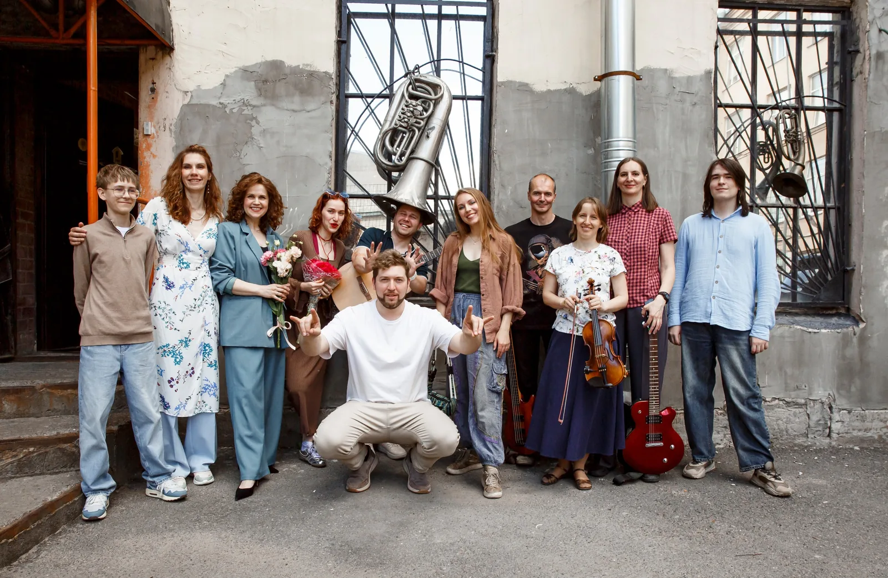

Взрослым с нуля
Никогда не поздно. Играем то, что нравится именно вам, — без зубрёжки гамм и академической духоты. Через несколько занятий уже звучат первые песни.
Я преподаватель-практик: веду ансамбль и оркестр, выступаю на сцене и учу этому же своих учеников. Уроки гитары в Санкт-Петербурге и онлайн — для взрослых и детей.
Записаться в Telegram Смотреть видео
Неважно, сколько вам лет и есть ли опыт — главное, что вы хотите играть.
Никогда не поздно. Играем то, что нравится именно вам, — без зубрёжки гамм и академической духоты. Через несколько занятий уже звучат первые песни.
Внимательный и структурный подход: ребёнок осваивает инструмент, учится слушать музыку и получает удовольствие от результата. Родители видят прогресс.
Умеете аккорды, но хочется большего? Приходите в ансамбль или оркестр — научитесь играть в коллективе, слушать партнёров и выходить на сцену.
Я преподаю гитару больше 10 лет, веду ансамбль и оркестр и сам регулярно выхожу на сцену. Верю: гитара — это способ играть с людьми, а не только упражнения в четырех стенах. Классическое образование: музыкальный колледж Тольяттинской консерватории, Астраханская государственная консерватория.
Не заставляю зубрить гаммы месяцами — сразу играем то, что вам нравится, но технически правильно. Все знания даю из живой исполнительской практики: то, что сам использую на репетициях и концертах.

Музыкант, который рассказывает про музыку, должен сам регулярно играть на сцене. Я выступаю с оркестром и в составе разных коллективов — ученики получают живые, «концертные» знания, а не только учебник.
Первое занятие — знакомство: разберём ваши цели и составим план. Стоимость уточняйте в Telegram.
Занятия проходят в центре СПб — район метро Звенигородская и Пушкинская.
* Условия и стоимость уточняйте в Telegram — подскажу под ваш запрос.
Собираю библиотеку коротких и понятных уроков: теория на практике и разборы песен. Всё бесплатно.
Готовится к публикации.
Готовится к публикации.
Готовится к публикации.
Предлагайте песни в Telegram.
Подписывайтесь, чтобы не пропустить.
Подписывайтесь, чтобы не пропустить.

Когда гитара перестаёт быть инструментом «для себя». Вместе играем аранжировки в разных жанрах — рок, джаз, фолк, блюз — и выходим на сцену.
Масштаб ансамбля, умноженный на десять: много гитар, большой зал, настоящие концерты на профессиональных площадках Санкт-Петербурга.

Реальные отзывы появятся вместе с первыми потоками — блок готов к их размещению.
«Отзыв появится в ближайшее время. Здесь будет рассказ ученика о занятиях и прогрессе.»
«Отзыв появится в ближайшее время. Здесь будет рассказ ученика о занятиях и прогрессе.»
«Отзыв появится в ближайшее время. Здесь будет рассказ ученика о занятиях и прогрессе.»
Связаться проще всего в Telegram — обычно отвечаю в течение дня. Офлайн-занятия — в центре СПб, район метро Звенигородская и Пушкинская.
Взрослый или родитель ребёнка? Есть ли опыт игры и сколько лет?
Индивидуальные уроки, ансамбль или оркестр? Какую музыку любите?
Офлайн в СПб или онлайн? Какие дни и время подходят?
Коротко о том, что спрашивают чаще всего. Не нашли ответ — напишите в Telegram.
Да. Большинство моих учеников-взрослых начинали с нуля. Через несколько занятий вы уже играете первые песни — без зубрёжки гамм.
Гитара, смартфон или ноутбук и интернет. Онлайн работает не хуже очного формата: вижу обе руки, сразу исправляю технику.
Обычно с 6–7 лет — когда хватает усидчивости на 30–45 минут. На первом бесплатном занятии проверим, готов ли ребёнок.
Для регулярных занятий — да. Подскажу, как выбрать недорогой и удобный инструмент, и проверю вашу гитару, если она уже есть.
Знакомимся, я смотрю на ваш уровень (или его отсутствие), слушаем, что хотите играть, и составляем план. Без обязательств.
Простые песни под аккорды — уже через 3–5 занятий. Выход на сцену с ансамблем — после нескольких месяцев уверенной игры.
Напишите в Telegram, какой у вас уровень и что хотите играть, — я предложу формат и время.
Написать в Telegram VK